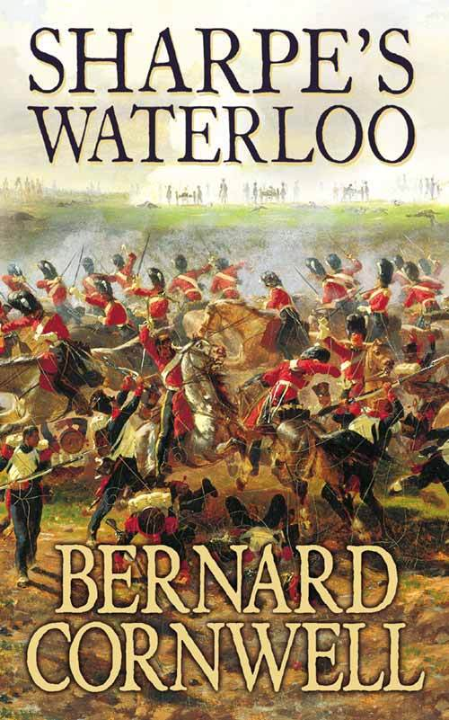
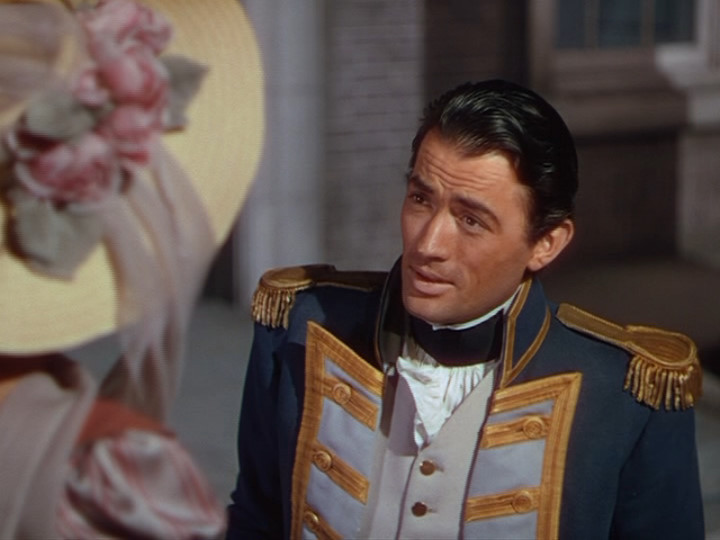
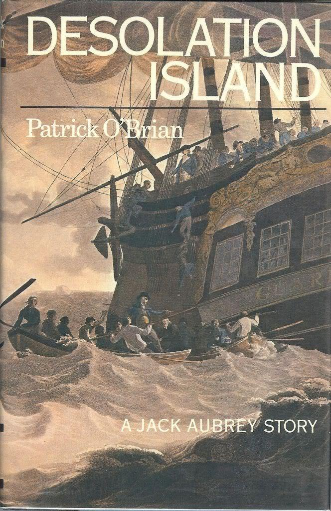
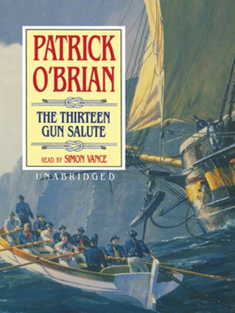
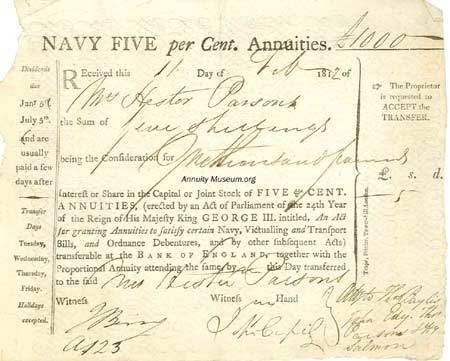
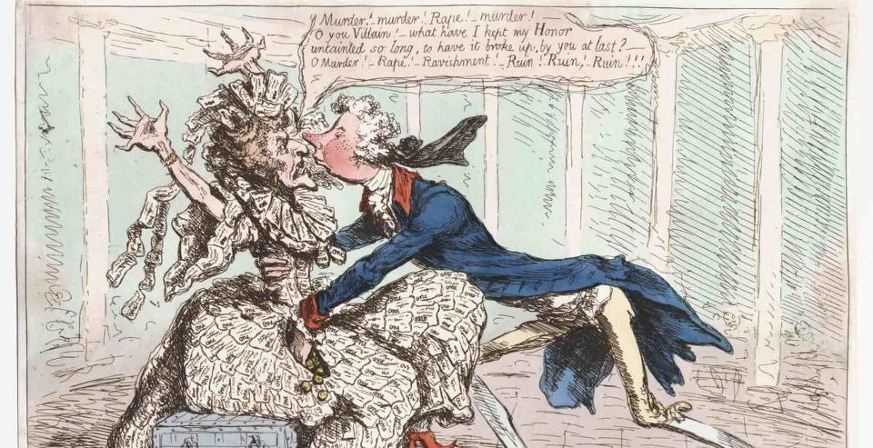
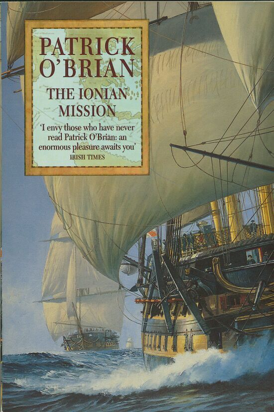
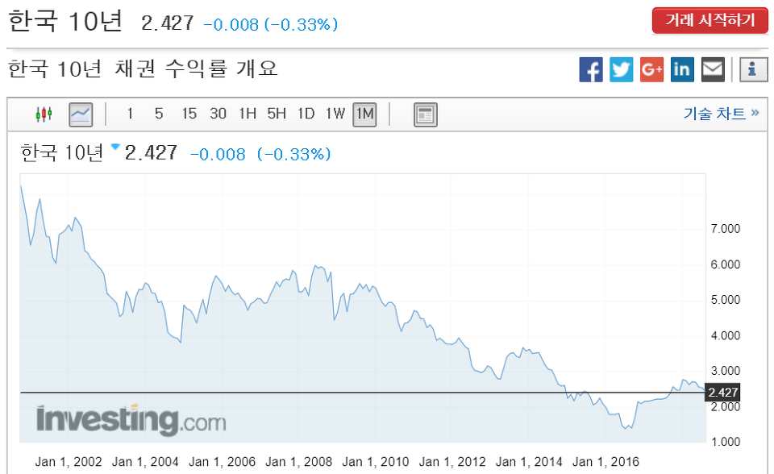

나폴레옹 시대의 채권 투자 이야기
게시: 2018-08-23T06:30:00+09:00
저로 하여금 이 블로그를 연재하게 만든 것은 세 권(..은 아니고 세 세트)의 소설입니다. 모두 영국 소설이고, 제 블로그에 자주 출입하시는 분들은 이미 다들 아시는, Sharpe, Hornblower, 그리고 Aubrey-Maturin 시리즈입니다. 이 세 종류의 소설은 모두 영국인이 쓴 나폴레옹 시대의 역사 소설이라는 점 외에도 공통점이 있지요. 일종의 성장 소설이라는 것입니다. 주인공들은 모두 20대 정도의 하급 장교(Sharpe의 경우는 일병 계급부터 시작합니다)에서 시작하여, 노년에 제독(역시 출신 성분이 미천한 Sharpe의 경우는 신분의 벽을 뚫지 못하고 중령에서 스톱)까지 이르게 되지요. 이 장편 시리즈물의 주인공들이 도중에 포로가 되기도 하고, 함정에 빠져 계급을 박탈당하기도 하는 등 갖은 난관을 겪다가, 결국 이겨내고 승진을 거듭하여 젊은 시절 꿈꾸던 높은 지위에 오르는 과정을 함께 하는 것은 또다른 즐거움입니다.
하지만 주인공들은 계급만 올라가는 것은 아닙니다. 이 천박한 앵글로색슨들은 '돈과 명예'를 다 가지려는 경향이 있지요. 아무리 주인공이 높은 직위에 오르고 사람들의 존경을 받게 된다고 해도, 가난하다고 하면 독자들에게 진정한 기쁨을 줄 수 없다고 생각하는 것 같습니다. 그래서인지, 이 주인공들은 결국 경제적으로도 다들 어느 정도 한몫을 잡게 됩니다. 그런데 저는 분명히 고상한 배달민족의 후예인데도, 그런 속물주의에 묘하게 끌립니다. 독자로서의 '저' 뿐만 아니라, 실제 생활 속에서의 저도 명예나 지위, 성취감 같은 것들보다 '돈'이 제일 소중한 것도 사실이고요.
오늘은 언제나 저를 설레게하는 두가지, 즉 먹을 것과 돈 중 후자에 대한 것입니다. 저 3 종류 소설 주인공들의 재테크 관련 장면 몇가지를 모아보았습니다.
먼저, Sharpe입니다. 런던 고아원 출신의 비천한 신분인 리처드 샤프는 사병으로서 인도에서 복무하다가, 영국의 마이소르 왕국 침공 때 티푸 술탄을 살해하고 그의 몸에서 각종 보석류를 훔쳐서 떼부자가 됩니다. 그러나 귀족 유부녀와의 비극적인 동거 생활 끝에 전재산을 다 날리고, 빈털터리 장교로 복무하지요. 그러다 스페인에서 철수하는 프랑스군 짐마차를 비토리아 전투에서 약탈하면서 다시 엄청난 부자가 되는데, 역시 비극적인 결혼 생활이 파탄나면서 땡전 한푼 건지지 못하고 다시 빈털터리가 됩니다. 다행히 전쟁이 끝나고 나서, 프랑스에서 아름답고 착한 과부를 만나, 그녀의 수익도 안 나는 농장에서 새로운 인생을 시작하지요. 그러다가 나폴레옹의 100일 천하가 시작되고, 이 덕분에 우리는 샤프가 평소에 얼마 정도의 수입을 올리는지 엿볼 수 있게 됩니다.

Sharpe's Waterloo by Bernard Conrwell (배경 : 1815년 벨기에) -----------------------------------
(샤프는 네덜란드 왕자의 사령부에서 간단한 식사를 하며 네덜란드 왕자의 정부(情婦)인 폴레뜨와 담소를 나누고 있습니다.)
샤프는 고개를 저었다. "이건 루실에게 무척 힘든 상황이야. 내가 자기 동포들인 프랑스군과 싸워야 한다는 걸 무척 싫어하거든."
"그럼 왜 싸우나요 ?" 폴레뜨는 화난 목소리로 물었다.
"또 내 무보직 보수(half-pay) 때문이지. 내가 군에 합류하는 걸 거부했다면, 군은 내 연금을 끊어버렸을텐데, 현재로서는 그게 우리 부부의 유일한 수입원이거든. 그래서 왕자가 날 소환했을 때, 난 그에 응해야 했지."
"하지만 오기 싫었단 말인가요 ?" 폴레뜨는 약삭빠르게 물었다.
"꼭 오고 싶은 건 아니었어." 그건 사실이었다. 비록 그날 아침에, 그는 프랑스군을 정찰하면서 자기가 이런 일을 얼마나 잘 해내는지에 대해 거부할 수 없는 기쁨을 느끼긴 했지만 말이다. 그는 며칠 동안은 루실의 불행에 대해서는 잠시 잊고 다시 병정 노릇을 해야겠다고 생각했다.
"그러니까 중령님은 그저 돈을 위해 싸우시는군요." 폴레뜨는 마치 그게 모든 것을 설명해준다는 듯, 지겹다는 투로 말했다. "왕자님은 댁이 중령 노릇하는 것에 대해 얼마나 주시나요 ?"
"일당이 1파운드 하고도 3실링 10펜스지." 그것이 샤프가 기병 연대의 명예 중령 계급에 대한 보수였는데, 이 금액은 샤프가 일생 동안 번 것 중 최고의 일당이었다. 이 금액 중 절반은 장교 식당의 식대와 사령부의 하인들 급료로 공제되버렸지만, 그래도 샤프는 아주 부자처럼 느꼈다. 어쨌든 그가 무보직 중위로서 받던 2실링 9펜스의 일당보다는 훨씬 괜찮은 보수였다. 원래 그가 군을 떠날 때의 계급은 소령이었지만, 기마 근위대(Horse Guards)의 서기들은 그의 소령 계급은 그저 명예 계급일 뿐 연대 계급이 아니므로, 그는 중위의 연금을 받아야 한다고 결정했던 것이다. 이 전쟁은 샤프에게 있어서 뜻밖의 횡재였고, 사실 그건 영불 양군의 수많은 무보직 장교들에게 다 해당하는 말이었다.
--------------------------------------------------------------------------------------------------------------
Sharpe가 평상시 중위의 무보직 보수로 받던 2실링 9펜스를 요즘 금액으로 환산하면 대략 3만5천원 정도됩니다. 그야말로 근근히 먹고 사는 형편이라고 할 수 있습니다. 하지만 시간순으로 가장 마지막 편이라고 할 수 있는 Sharpe's Ransom 편을 읽어보면, 프랑스에서 농부로 정착한 샤프는 아주 행복하게 살았던 것 같습니다. 무엇보다, 농장에서 수익이 나건 말건 그래도 밥은 굶지 않을 정도의 연금(half-pay)이 계속 나온다는 것이 든든하지 않습니까 ?
그에 비해서, 좀더 고전적인 작품인 Hornblower 시리즈의 혼블로워는, 비록 가난한 30대를 보냈지만 중년에 이르러 금전운이 트이기 시작합니다. 적의 집중 공격에 배와 선원들을 잃고 항복하여 적의 포로가 되었다가, 교묘하게 탈출한 것이 뜻밖에 대중의 관심을 받게 되어 인기가 급등한 것이 계기가 되지요.

(Hornblower 시리즈 중 'Happy Return' 편은 1951년 그레고리 펙 주연의 Captain Horatio Hornblower 라는 제목으로 영화화되었습니다.)
Flying Colours by C. S. Forester (배경 : 1811년 영국) -------------------
(혼블로워가 탈출 후 섭정공에게서 직접 Bath 기사 작위를 받습니다.)
"고맙습니다." 혼블로워가 말했다. 그가 다시 고개를 숙였다 들 때, 목에 걸었던 커다란 별 장식이 그의 가슴에 쿵하고 와 닿았다.
"축하하네, 대령." 섭정공이 말했다. (혼블로워는 해군이고, 해군에는 대령(Colonel)이라는 계급이 없습니다: 역주)
혼블로워는 그 말에 모든 사람들의 눈길이 자신에게 쏠리는 것을 느꼈다. 그것을 보고, 혼블로워는 섭정공이 그의 계급에 대해 단순히 말실수를 한 것이 아니라는 것을 깨달았다.
"전하 ?" 그는 주변의 기대에 맞추어, 마치 뭘 묻듯이 말했다.
공작이 설명해주었다. "전하께서는 자네를 해병 대령(Colonel of Marines)으로 임명하시게 된 것을 무척 기뻐하신다네."
해병 대령은 매년 연봉으로 1200 파운드를 받게 되는데, 그에 따른 의무는 아무 것도 없었다. 즉, 그 계급은 뭔가 공을 세운 함장들에게 상으로서 주어지는 신분으로서, 그 효력은 그가 제독으로 승진할 때까지 계속되었다. 이미 그에게는 나포 포상금으로 6천 파운드가 있었다. 이제 보직을 못 받는 상황이 되더라도, 최소한 함장의 무보직 급여(half-pay)에 덧붙여 1년에 1200 파운드의 수입이 있게된 것이었다. 그는 이제 인생 최초로, 금전적인 안정을 얻게 된 셈이었다. 이제 그는 리본과 별 장식으로 된 작위도 받았다. 그는 사실 그가 꿈꿔왔던 모든 것을 이룬 것이었다.
"이 불쌍한 친구는 정신이 아찔한가 보구만." 섭정공은 기뻐하며 크게 웃었다.
----------------------------------------------------------------------------------
저 위에서 샤프가 받는 중위의 무보직 보수를 1년 내내 받는다고 해도 불과 50파운드 정도인데, 혼블로워는 매년 1200 파운드(현재 원화로 약 3억원)를 받게 되네요. 저 정도면 정말 직장 생활 할만 하겠네요.
하지만 혼블로워의 경우는 정말 드문 경우니까, 모두가 이런 것을 기대할 수는 없습니다. 그에 비해 Aubrey-Maturin 시리즈의 주인공 잭 오브리는 30대의 젊은 시절부터 해군의 특성을 살려 나포 포상금을 통해 상당한 재산을 모읍니다. 살제로 한 개인이 이렇게 많은 나포 포상금을 얻을 기회는 그리 많지 않다고 봐야지요. 그런데 잭 오브리는 이렇게 모은 재산을 어떻게 굴렸을까요 ? 은행 ? 채권 ? 주식 투자 ? 부동산 ? 한마디로 말하면 시작은 부동산, 즉 살 집과 주변 텃밭 같은 것을 사들였고, 이어서 말들을 사들이기 시작합니다. 요즘으로 따지면 차고에 포르쉐와 아우디를 들여놓기 시작하는 것이지요. 이 시절에는 은행이나 주식 시장이 없었을까요 ? 있었습니다. 유명한 영란은행, 즉 Bank of England는 1694년에 영국 해군의 확장에 필요한 돈을 마련하기 위해 이미 설립된 바 있었고, 그 외에도 여러가지 잡다한 은행들도 영업을 하고 있었습니다. 또 주식시장도 성행했습니다. 18세기의 유명한 '남해 거품 사건'이 이미 18세기에 있을 정도였으니까요. 하지만 잭 오브리는 그런 금융 재테크에는 별로 관심이 없었습니다.

(이 에피소드에서 잭 오브리는 생애 최악의 항해를 하게 되지요.)
Desolation Island by Patrick O'Brian (배경: 1811년 영국) ------------------------------------
한 반 마일 쯤 걷고 난 뒤, 잭이 말했다. "난 그에 대해서는 그 사람을 믿을 수가 없어. 무엇보다도 그는 씨티(The City, 런던 내 당시 유명한 금융사들이 몰려 있던 구역을 일컫는 이름)에서 아주 유명한 사람이라네. 그는 펀드들이 어떻게 움직이는지 이해하고 있고, 또 한번은 내게 은행주에 좀 투자를 하면 그 달이 지나기 전에 짭짤한 수익을 올릴 수 있을 거라고 말해주기도 했지. 그리고 정말로, 미스터 퍼시벌이 성명을 발표했고, 덕택에 몇몇 사람들은 수천 파운드의 순이익을 올렸어. 하지만 난 그처럼 단순한 사람은 아니라네, 스티븐. 주식이나 유가증권은 도박이야. 그리고 난 내가 잘 이해하는 것들에만 집중한다네. 배나 말 같은 것들 말이지."
---------------------------------------------------------------------------------------
이렇게 금융 재테크에 관심이 별로 없다면, 돈을 적극적으로 불리지는 못하더라도 최소한 돈을 날릴 걱정은 없지요. 원래 돈이 많을 수록 돈을 불리는 것보다는 안전하게 지키는 것에 관심이 더 많아지지 않습니까 ? 하지만 불행하게도 잭 오브리는 그런 초심을 지키지 못하고, 나중에 일종의 사기꾼 벤처 사업가에게 거액을 투자하여 그야말로 모조리 말아먹습니다. 당시에는 이렇게 오랜 시간을 바다에서 보내느라 육지 사정에 어두운 뱃사람들, 특히 나포 포상금으로 부자가 된 함장들에게 사기를 치는 사람들이 꽤 많았다고 하고, 그런 사람들을 육지 상어(land shark)라고 불렀다고 합니다. 잭 오브리도 그 희생양이 된 것이지요. 그러다가 손실을 만회하려는 초조감에, 더 큰 불행을 겪게 됩니다. 잭 오브리의 실존 모델인 코크레인 경이 겪은 실제 사건인 1814년 런던 주식시장 조작 사건에 휘말려, 잭 오브리는 모든 것을 잃습니다. 그러다 결국 다시 바다에서 한몫을 잡아 재기하지요.
하지만 이제 비싼 수업료를 내고 투자란 무엇인가에 대해서 배운 잭 오브리는 무척 조심스러운 투자자가 됩니다. 주식 같은 것은 거들떠 보지도 않고, 오로지 안전자산인 국공채 정도만 손을 대지요.

The Thirteen Gun Salute by Patrick O'Brian (배경: 1813년 태평양 HMS Dianne 함상) ------------
하지만 선원들 중 대부분은, 특히 2배 및 2.5배 배당을 받는 선원들은 오브리 함장의 조언에 귀를 기울였다. 오브리 함장은 금전적인 문제에 대해서 매우 훌륭한 조언을 주는 편이었다. 그가 주창하는 것은 근검절약과 조심스러운 투자 그리고 기대 수익률을 작게 가져가는 것이었고, 5% 해군 채권이 그가 괜찮다고 인정하는 최대 한도였다.
뱃일 하는 사람들 사이에서는, 오브리 함장이 비록 '행운의 잭 오브리'의 별명을 얻을 정도로 나포 실적이 좋아서, 가장 최근의 깜짝 놀랄 정도의 나포물 전에도, 최소한 3번 정도 큰 돈을 벌었지만, 일단 뭍에 오르면 운이 영 좋지 않았다는 것이 널리 알려져 있었다. 한때 그는 경주마들을 마굿간에 채워두고 브룩스(Brook's) 클럽에서 눈에 띄는 생활을 하는 등 호사를 누렸었다. 또 한때는 남의 말에 잘 넘어가는 팔랑귀여서, 뭔가 대단해 보이는 벤처 사업에 투자를 하기도 했다. 전반적으로는 그의 투자는 재앙으로 이어졌다고 할 수 있었다. 따라서 객관적인 눈으로 볼 때, 금전적 조언을 주는데 있어 그보다 더 적임자는 찾기 힘들었다.
-----------------------------------------------------------------------------------------------------------------
그런데 저 위에서 말한 5% 해군 채권 (Navy five per cent)라는 것은 대체 어떤 물건이었을까요 ? Consol이라고 불렸던 정부 통합 국채(Consolidated Annuities)에 대해서는 나폴레옹 시대의 토지와 유가증권 편에서 소개드린 바 있었습니다. 이건 당시 다양한 금리로 나오던 정부의 채권을 대략 3% 정도의 이율로 통합하여 발행하던 것이지요. 이는 상당히 오랜 기간, 즉 1751년부터 1920년대까지 존재하던 채권이라서, 혼블로워를 비롯한 이런저런 문학 작품에서도 다루어지던 물건이었습니다. 하지만 저 5% 해군 채권이라는 것은 상당히 단기간, 즉 1810년부터 1821년 사이에만 발행되었던 것입니다.

(그 유명한 Navy Five per cent 채권입니다. 1천 파운드에 대한 이자로 5실링을 헤스터 부인에게 지불한다는 증서인데, 왜 5% 이자에 고작 5실링만 주는지는 이해가 안되는데요 ?? 매주 지급되는 이자라고 해도 1파운드 정도씩은 이자로 줘야 할 것 같은데 말이지요 ? 아시는 분은 댓글 좀 굽신굽신)
당시 나폴레옹 전쟁으로 인한 전비 마련 때문에, 영국은 엄청난 재정적자에 시달리고 있었습니다. 심지어, 금본위제의 기본 규칙, 즉 영란은행에서 발행된 지폐를 영란은행에 가져가면 그 액면가만큼의 금으로 태환해준다는 것도 일시적으로 중지시킬 정도였습니다. 이 불태환 조치는 1797년부터 1821년까지 시행되었습니다. (유럽의 진짜 금본위제는 이 이후라고들 하지요.) 이 일시적인 비상 조치가 끝난 시기와, 5% 해군 채권 발행이 종료된 시기가 일치하는 것을 보면, 1815년 나폴레옹 전쟁이 끝나고도 경제가 제 궤도에 오르는데는 약 6년 정도가 걸렸던 모양입니다. 그래도 영국은 역사적으로 꾸준히 빚을 잘 갚았기 떄문에 전쟁 중에도 세금을 과도하게 올리지 않고도 전쟁에 돈을 댈 수가 있었습니다. 반면에 프랑스는 루이 14세 때부터도 채권으로 문제를 많이 일으켰고 특히 혁명 때는 아시냐(Assignat) 지폐로 파멸적인 사고를 친 바 있었으므로 국민들이 국채 따위를 믿지 않았습니다. 그로 인해 나폴레옹은 오로지 세금과 전쟁 배상금만으로 전시 금융을 처리해야 했습니다. 나중에 그 이야기도 따로 다룰 기회가 있으면 합니다.

(당시 영국 수상인 윌리엄 피트가 금태환 중지를 선언한 것에 대해 당시 나왔던 풍자 만화입니다. 이 만화에서 처음으로 나온 "Old Lady of Threadneedle Street"라는 영란은행에 대한 별명은 지금까지도 통용된다고 합니다.)
아무튼 영국 정부의 이런 재정난의 주범은 바로 영국의 로열 네이비, 해군이었습니다. 육군도 돈을 많이 먹는 괴물이지만, 해군에 비하면 양반이지요. 그러므로 전쟁 수행 능력이 바로 해군에 집중되어 있던 영국은 정말 많은 돈이 필요했습니다. 이미 금으로 대금을 지불하지 못하게 된 영국 정부는, 그렇다고 무턱대고 지폐를 찍어댈 수도 없었으므로, 궁여치책으로 해군 장교 및 공무원, 해군에 물건을 납품하는 상인들에게 지폐 대신 연 금리 5% 짜리 채권으로 급료와 물품 대금을 지급하기 시작합니다. 이는 받는 사람들로서도 그렇게까지 나쁜 일은 아니었습니다. 당시 대표적 안전 투자처였던 Consol의 금리가 (이 역시 나폴레옹 전쟁 기간 중 일시적으로 4~5%로 뛴 경우가 간혹 있었습니다만) 3%대였던 것을 생각하면, 영국 정부나 다름없는 영국 해군에서 발행한 5% 채권이라면 아주 짭짤한 이윤이었던 것입니다. 따라서, 해군과 직접적인 관계가 없던 일반인들도 이 채권을 사기 시작했고, 이것이 당시에 아주 인기있는 재태크 수단이 되었습니다. 가령 세계일주로 유명한 영국 쿡 선장의 부하였던 윌리엄 베일리(William Bayly)라는 사람도 유서에서 자기 유산의 일부를 5% 해군 채권(Navy five per cent)으로 남긴다고 적어놓았습니다.
그런데 , 일년에 어느 정도 수입이 있으면 대략 중산층의 삶을 살 수 있을까요 ? 또, 당시 중산층이라고 하면 생업이 없어도 먹고 살 수 있는 계급을 뜻했는데, 이런 '경제적 자유'를 얻기 위해서는 대략 어느 정도의 목돈이 있어야 했을까요 ?

(저 책 표지의 광고 카피가 명작이군요. '이 책을 아직 안 읽은 분들이 정말 부럽소. 굉장한 재미가 그대들을 기다리고 있다오 !')
The Ionian Mission by Patrick O'Brian (배경: 1813년 지중해 HMS Surprise 함상) ------------
(선상에서 장교들 간에 시 낭송 경쟁이 벌어집니다. 드라이버 중위가 여자의 지참금에 대해 연연하지 말라는 내용의 시를 낭송합니다.)
"...
과도한 부를 갈망하지 말라
우리의 삶을 즐겁게 해주는 것으로 증명된 것은
품위있는 충족함과 사랑이니까"
"정말 훌륭하군 !" 사무장이 그의 투표 용지를 적으며 외쳤다. "하지만 중위님이 인식하는 품위있는 충족함이란 대략 얼마 정도라고 생각하나요 ? 그러니까, 그저 월급 뿐인 사람에게 말입니다 ?"
드라이버 중위는 웃고 숨을 고르더니 마침내 말을 꺼냈다. "그 여자가 마음대로 할 수 있는 돈이 1년 이자 수익이 200 파운드 정도 나올 정도의 금액 정도면 족하겠지요."
------------------------------------------------------------------------------
당시에는 위와 같이, 약 200파운드, 현재 가치로 약 5천만원이면 된다고 생각한 모양입니다. 실제로 당시 영국 시골의 대표적인 신사 계급이라고 할 수 있는 영국 국교회 신부의 연 수입이 저 정도였다고 합니다. 현대의 우리나라에서도 그 정도라면 중산층으로 살아가는데 전혀 지장이 없을 것 같군요. 5% 해군 채권은 드물게 괜찮은 투자처였으니 예외로 치고, 당시의 대표적인 안전 투자처인 Consol의 금리가 3%였으니까, 연 200 파운드가 나오려면 대략 6700 파운드의 원금이 있어야 했습니다. 현재 원화로는 대략 16억원 정도네요. 글쎄요, 요즘 우리나라 10년물 국채 금리는 당시 영국 국채 금리보다 더 낮은 2.4% 정도입니다만, 당시 영국은 물가가 상당히 안정되어 있던 것에 비해, 우리나라는 인플레, 특히 부동산 인플레가 만만치 않아 국채 금리로만 먹고 산다면 좀 어려울 것 같습니다.

(우리나라 10년 국채 금리 수익률 추이입니다.)